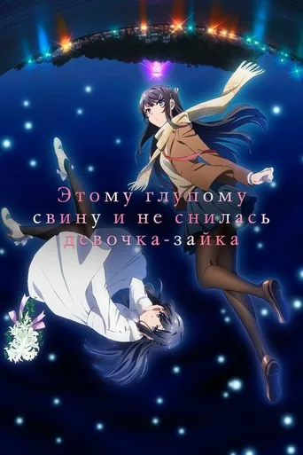

Этому глупому свину и не снилась девочка-зайка 2019
Сакута Адзусагава — одиннадцатиклассник из Фудзисавы, города, где огромное небо сходится с бескрайним морем. После целого ряда невероятных происшествий жизнь Сакуты наконец-то вернулась в нормальное русло, и он снова проводит время со своей девушкой — актрисой Маи Сакурадзимой. Но их идиллию нарушает Сёко Макинохара — первая любовь Сакуты, которой он многим обязан. У Сёко есть секрет: она существует в двух образах, как ученица средней школы и совершенно взрослый человек. И пока взрослая Сёко нарушила гармонию между Сакутой и Маи, младшая оказалась в больнице, вновь потревожив незажившие раны Сакуты.
Открыть в каталогеДанные и постеры принадлежат их правообладателям. Этот продукт использует TMDB API, но не одобрен и не сертифицирован TMDB.